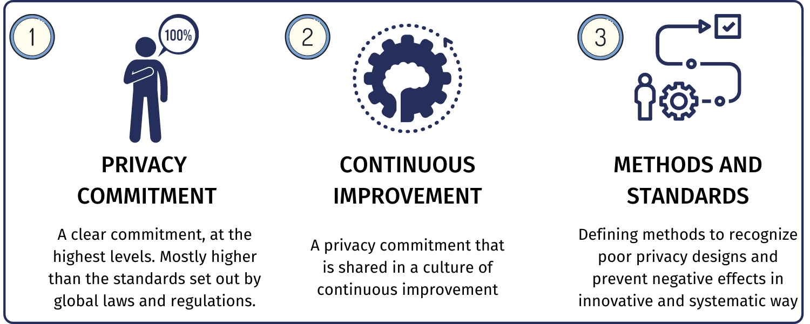
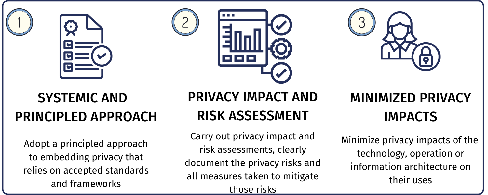
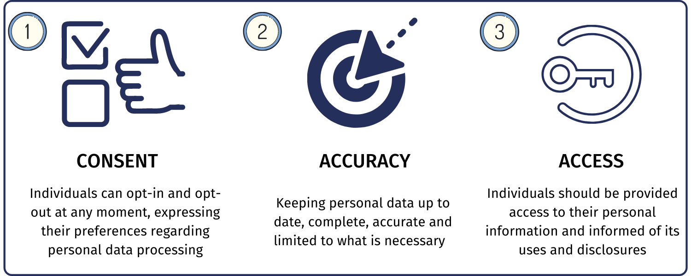

Syllabus
Use and explain the 'privacy by design' approach in the development of software solutions, including:
- proactive not reactive approach
- embed privacy into design
- respect for user privacy
Learning Intention and Success Criteria
Learning Intention - Students will:
- Understand the core principles of software development's‘ privacy by design' approach.
- Learn how to implement privacy-first practices throughout the software development lifecycle.
Success Criteria - Students can:
- Students will be able to explain the key principles of 'privacy by design'.
- Students will be able to integrate privacy-focused features into software solutions.
- Students will respect user privacy by embedding it directly into the software design.
Content
The 'privacy by design' approach means that privacy considerations are incorporated from the beginning of the software development process. It's not an afterthought but rather a proactive and essential part of the design process to safeguard user privacy throughout the software's lifecycle.
The three main principles of privacy by design are:
- Proactive, not reactive approach
- Embed privacy into design
- Respect for user privacy
Each plays a crucial role in protecting users' personal information and complying with privacy regulations.
Proactive not reactive approach
Definition
A proactive approach ensures that potential privacy issues are addressed before they occur. Instead of reacting to privacy breaches after they happen, developers anticipate and mitigate risks early in the design process.
Privacy by design is not reactive to privacy risks that materialise or occur. Instead, it is proactive by aiming to prevent any privacy threats from occurring. In the initial stages of the software development cycle, privacy impact assessments (PIAs) are conducted to identify and evaluate potential risks.

Developers will ensure the software design addresses these privacy issues proactively - where privacy protections are embedded into the software architecture and design before deployment.
How It Works:
-
Risk Assessment:
Conduct privacy risk assessments during the planning and design stages to identify potential vulnerabilities and mitigate them before deployment. -
Prevention Over Detection:
Build privacy features that prevent issues rather than relying solely on detection mechanisms. This means implementing measures like anonymising data, minimising data collection, and encrypting sensitive information.
Example in Software Development:
A proactive approach would involve setting up privacy controls like consent mechanisms and data anonymisation during the project's initial stages and ensuring that these are embedded before the software is even deployed.
Embed privacy into design
Definition
Embedding privacy into the design means that privacy measures are integrated directly into thesoftware'ss architecture, ensuring privacy is considered at every step of the development process. Privacy considerations should be incorporated into the core design and the software architecture. Privacy by design should include systematic embedding of privacy, data minimisation and encryption techniques to protect user privacy.
How It Works:
-
Privacy as a Default:
Systems should be designed with privacy features enabled by default. Users should not have to take extra steps to protect their privacy—it should be built into the system. -
Minimal Data Collection:
Limit the amount of personal data collected to the minimum required for the software to function, reducing the risk of data exposure.
Example in Software Development:
During the design phase, developers should ensure that all features respect user privacy by limiting data collection and securing stored data.

Respect for user privacy
Definition
Respecting user privacy means giving users control over their data and ensuring transparency in handling their data. Users should be informed about what data is being collected and how it will be used, and they should be given options to manage or delete their information.
Respect for User Privacy aims to prioritise the interests and needs of individual users as the centre of Privacy by Design and is user-centric. The goal is to ensure that users have an active role in managing their data.
This includes providing unambiguous consent to the use of private data. User Privacy should also be respected by limiting user data sharing with external third parties, ensuring confidentiality.

How It Works:
-
User Control:
Provide users with options to edit, delete, or export their information to manage their data. This shows respect for their ownership of the data. -
Transparency:
Clearly communicate with users about how their data is being used. Implement privacy policies that explain data practices in simple, understandable language.
Example in Software Development:
Incorporating user controls and transparency into the application's interface allows users to manage their personal information easily.
Activity
PowerPoint